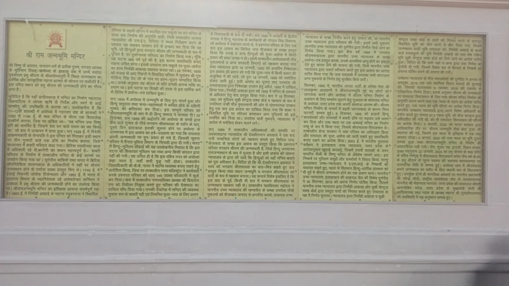
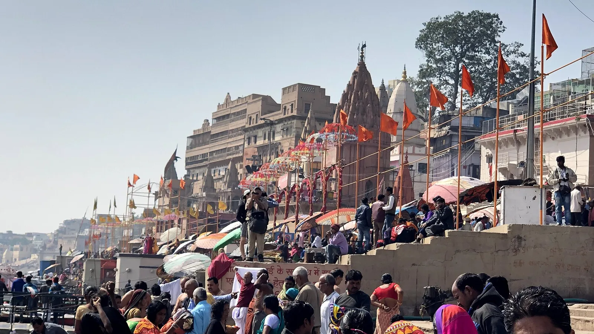
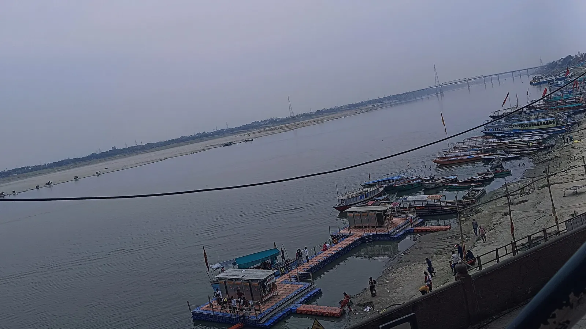
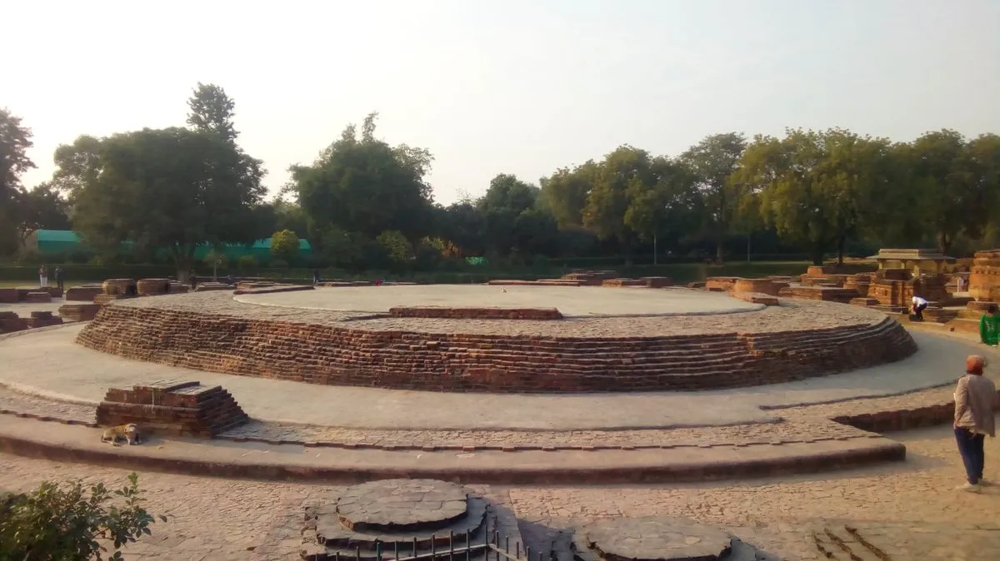
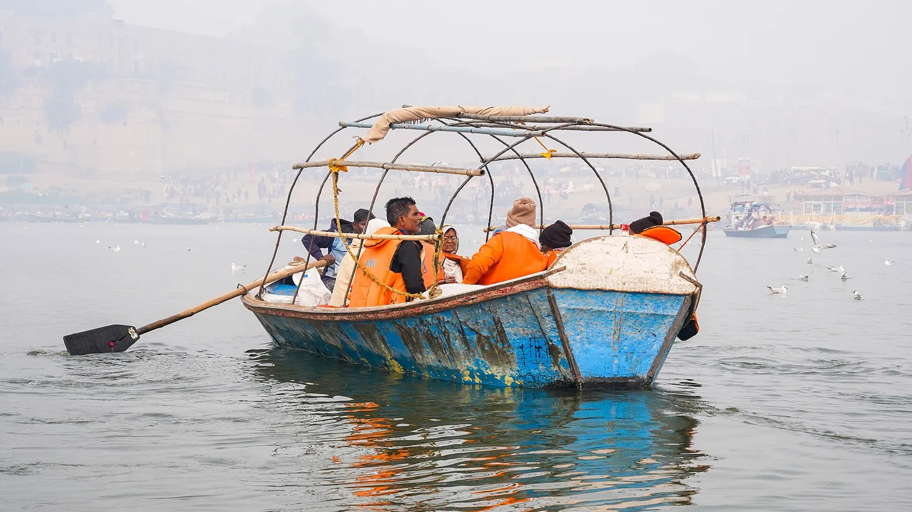
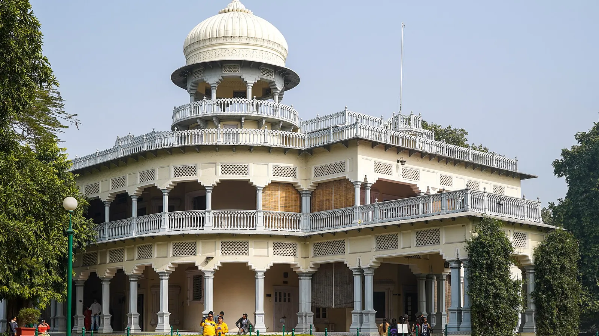
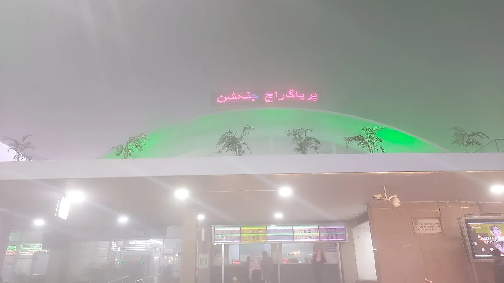
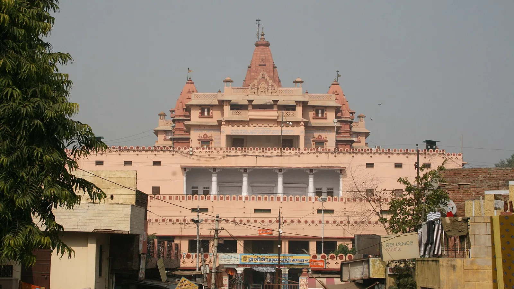
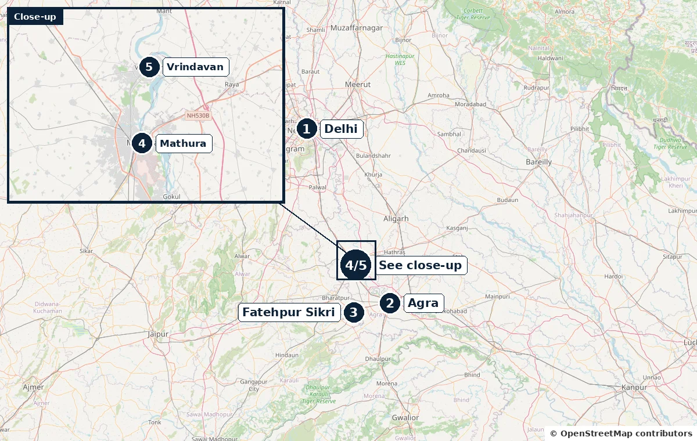

A cultural deep-dive along the Ganga. Delhi, the Nawabi city of Lucknow, Ayodhya, four nights in Varanasi, the Sangam at Prayagraj and three nights in Agra with Mathura and Vrindavan. This itinerary is built from our nights-per-place outline; the day plans, timings and changes are ours. The outline placed Ayodhya as a day trip from Varanasi, which is over 4 hours each way. We sleep in Ayodhya between Lucknow and Varanasi instead.
See it for yourself
Photos from the journey













Where you go
The journey on one map

DelhiLucknowAyodhyaVaranasiSarnathPrayagrajAgraFatehpur SikriMathuraVrindavanDelhi
Day by day, in short
Daily travel brief
Distances are by road for the whole day. The full plan with timings comes with your detailed itinerary.
-
1
Arrive in Delhi
- Evening at Akshardham's water show, if it is not a Monday.
-
2
-
3
-
4
Ayodhya and the Saryu aarti
- Shri Ram Janmabhoomi Mandir: phones, bags and shoes are deposited before entry.
- We moved Ayodhya here: as a day trip from Varanasi it is 9 hours on the road.
-
5
To Varanasi and the evening aarti
- Ganga aarti: the ghats are packed at aarti.
- Tomorrow's sunrise boat leaves at about 05:45.
-
6
Sunrise on the Ganga and the old city
- Kashi Vishwanath temple: phones and bags are not allowed inside.
- Photography at the cremation ghats is not allowed.
-
7
Sarnath, where the Buddha first taught
- Sarnath Museum: closed on Fridays.
- A quiet afternoon by the river after Sarnath.
-
8
Varanasi at your own pace
- Try kachori-sabzi for breakfast and malaiyyo in winter.
-
9
To Prayagraj and the Sangam
- The Magh Mela fills the Sangam in January and February.
-
10
Anand Bhawan and the old city
- Anand Bhawan: closed on Mondays.
- Tomorrow's train to Agra is a long one.
-
11
Train to Agra
- Sunrise at the Taj tomorrow.
-
12
The Taj Mahal at sunrise and Agra Fort
- Taj Mahal: closed on Fridays.
- Buy marble inlay only from government-approved shops.
-
13
Mathura, Vrindavan and Fatehpur Sikri
- Krishna Janmabhoomi, Mathura: phones are not allowed inside.
- Vrindavan's temples close in the early afternoon; morning is best.
-
14
Fly home from Delhi
- Transfer to the airport: leave 4 hours before an international flight and 3 before a domestic one.
- Pack liquids and souvenirs in checked baggage.
Local know-how
Travel hacks from our desk
UPI, cards and cash
UPI works almost everywhere, even at small stalls. Keep some cash in INR 100 and 200 notes for temples, parking, tips and places where the network is weak.
Temple and shrine etiquette
Cover shoulders and knees. Remove shoes where asked, and carry socks for hot stone floors. Leather belts and bags are not allowed inside some Jain and Hindu temples. Ask before photographing people and inside shrines.
Water and street food
Drink sealed bottled or filtered water only. Choose busy stalls where food is cooked in front of you, and skip cut fruit and ice from roadside stalls.
Driving times
Indian roads are slower than the kilometres suggest: plan on 40 to 50 km an hour on highways and much less in hills and towns. Your driver's breaks and meal stops are built into the timings.
Plugs and tipping
Plugs are Indian three-pin and two-pin, 230 volts. Tipping drivers and guides about INR 300 to 500 a day is appreciated.
When to go
Best time to visit for this journey
November, for Dev Deepawali on the ghats, or February.
October to March. Dev Deepawali in Varanasi (November) and the Magh Mela in Prayagraj (January to February) are special but crowded. Fog can delay trains in late December and January.
The package
What's included
Included
- Hotels as listed with breakfast
- Private air-conditioned car with driver for all transfers and sightseeing
- 24/7 support from Blue Diamond Voyage
- Trains Delhi to Lucknow and Prayagraj to Agra
- Boats in Varanasi and Prayagraj
Not included
- Flights and trains not listed as included
- Entry fees, guides, boats and activities
- Lunches and dinners unless stated
- Travel insurance
The detailed itinerary
Some journeys are planned. Ours are crafted.
The full 14-day plan is ready: hour-by-hour timings, drive times, temple dress codes, food for your diet and a route map for every day. Tell us your dates and your city, and we'll send it to you on WhatsApp, shaped around you.
- Hour-by-hour timings
- A route map for every day
- Hotel and room details
- Visa and entry steps
- Vegetarian and Jain dining
24/7 travel desk+91 97148 59797+91 98242 21400
Photo and map credits
- Indira Gandhi International Airport: Wasiul Bahar, CC BY-SA 4.0, via Wikimedia Commons
- Red Fort: Jakub Hałun, CC BY-SA 4.0, via Wikimedia Commons
- Bara Imambara: Harsh13596, CC BY-SA 4.0, via Wikimedia Commons
- Shri Ram Janmabhoomi Mandir: Gamerzer, CC BY-SA 4.0, via Wikimedia Commons
- Dashashwamedh Ghat: Maskaravivek, CC BY-SA 3.0, via Wikimedia Commons
- Assi Ghat: Sonalyadav1234, CC BY-SA 4.0, via Wikimedia Commons
- Dhamek Stupa: SpeakingArch, CC BY-SA 4.0, via Wikimedia Commons
- Assi Ghat: Sonalyadav1234, CC BY-SA 4.0, via Wikimedia Commons
- Triveni Sangam: This Photo was taken by Timothy A. Gonsalves. Feel free to use my photos, but pl, CC BY-SA 4.0, via Wikimedia Commons
- Anand Bhawan: This Photo was taken by Timothy A. Gonsalves. Feel free to use my photos, but pl, CC BY-SA 4.0, via Wikimedia Commons
- Prayagraj Junction: Psubhashish, CC BY-SA 4.0, via Wikimedia Commons
- Taj Mahal East Gate: Daniel VILLAFRUELA, CC BY-SA 3.0, via Wikimedia Commons
- Shri Krishna Janmabhoomi: Diego Delso, CC BY-SA 4.0, via Wikimedia Commons
- Indira Gandhi International Airport: Wasiul Bahar, CC BY-SA 4.0, via Wikimedia Commons
- Maps: © OpenStreetMap contributors; road routes by OSRM.